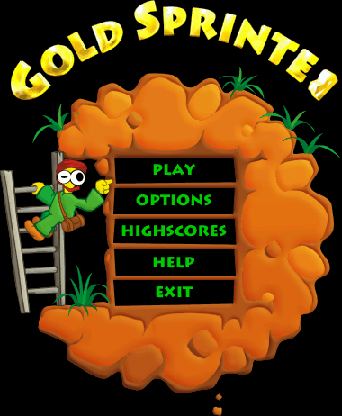
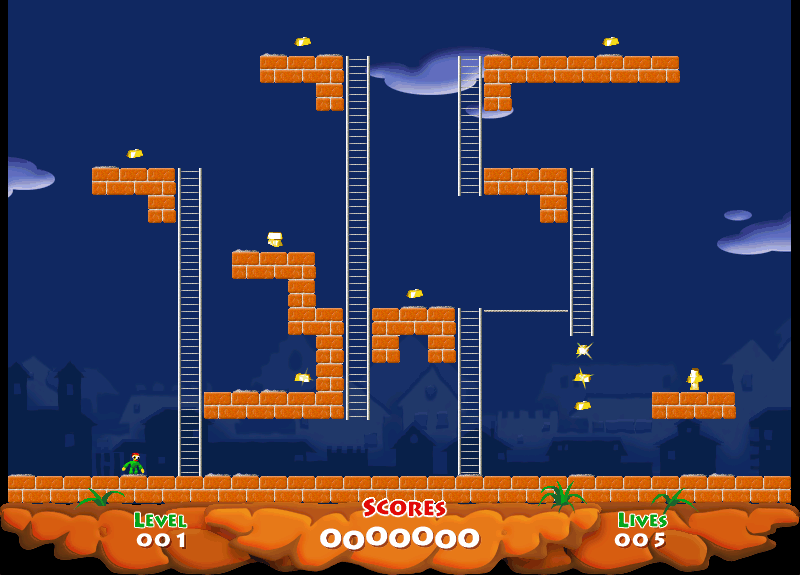

名稱：掏金小高手：金牌運動員 (Gold Sprinter，中文／英文版)
簡介：Aliasworlds 2002年出品的動作遊戲，類似Load Runner，由Alawar代理發行。2003年
由新造科技中文化並代理發行，但其實只中文化安裝程式，遊戲內容仍然是英文 [待補]。


備註：本版為2010年豪華版（請使用內附的serial.txt序號啟動為正式版）
保護：豪華版為序號，其餘版本無保護
備註：新造科技代理版為2003年的1.6版。
備註：VirtualBox執行1.6版時需搭配WineD3D（其餘版本不用）。
備註：Gold_Sprinter 1.86.rar = 2006年1.8.6版
Gold_Sprinter Full.rar = 2006年1.8.6全場景版